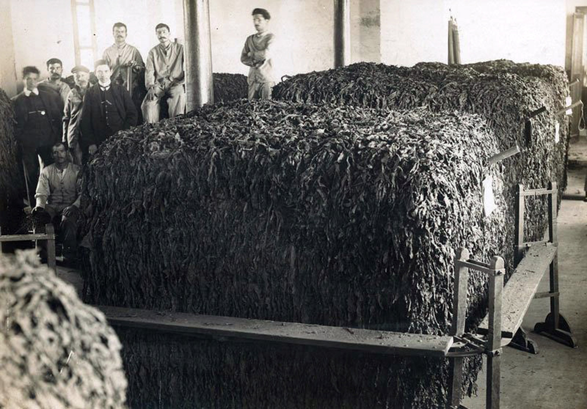
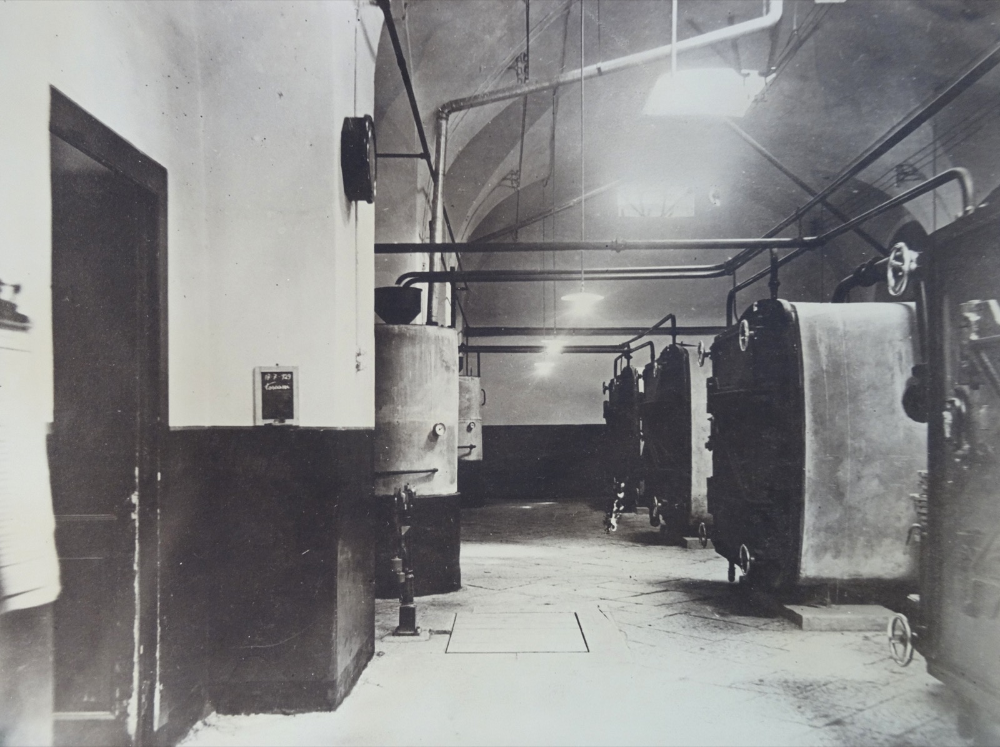

1765
Progetto di adattamento degli edifici del vecchio convento a fabbrica del tabacco, a opera di Saverio Belgrano. Il nuovo impianto entra in funzione, vengono prodotti tabacchi da fiuto e da pipa



Progetto di adattamento degli edifici del vecchio convento a fabbrica del tabacco, a opera di Saverio Belgrano. Il nuovo impianto entra in funzione, vengono prodotti tabacchi da fiuto e da pipa

